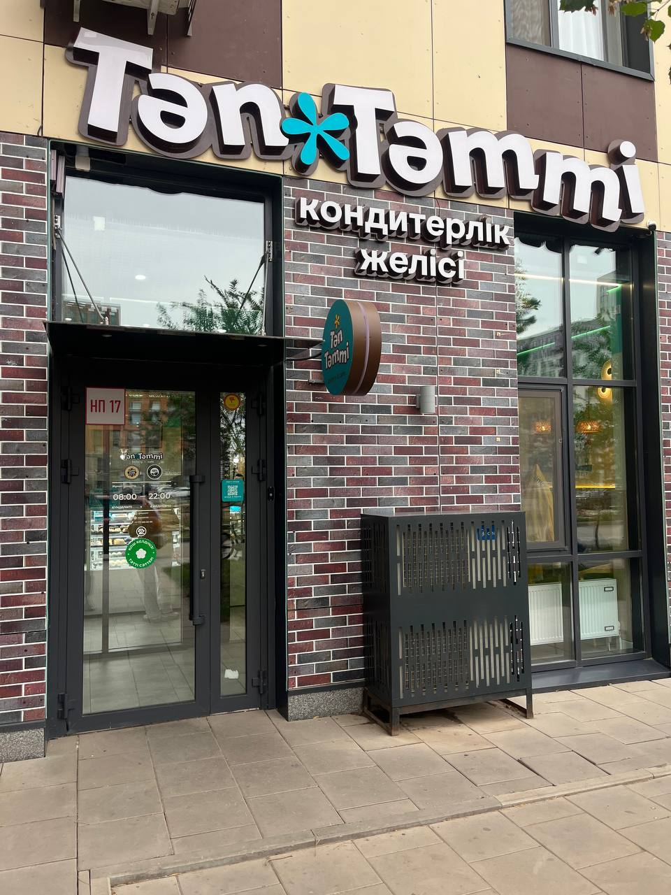

Отзыв о заказе
Постоянно покупаю здесь выпечку и торт, всё всегда качественно и вкусно.
Мы собираем обратную связь от каждого гостя, чтобы ежедневно улучшать качество наших десертов и сервиса в Астане.
Постоянно покупаю здесь выпечку и торт, всё всегда качественно и вкусно.
Каждое утро беру здесь хрустящий круассан и капучино перед работой. Качество стабильно высокое!
| Категория | Количество отзывов | Средний балл |
|---|---|---|
| Праздничные торты | 120 | 4.9 / 5.0 |
| Порционные десерты | 310 | 4.8 / 5.0 |
| Свежая выпечка | 450 | 5.0 / 5.0 |
